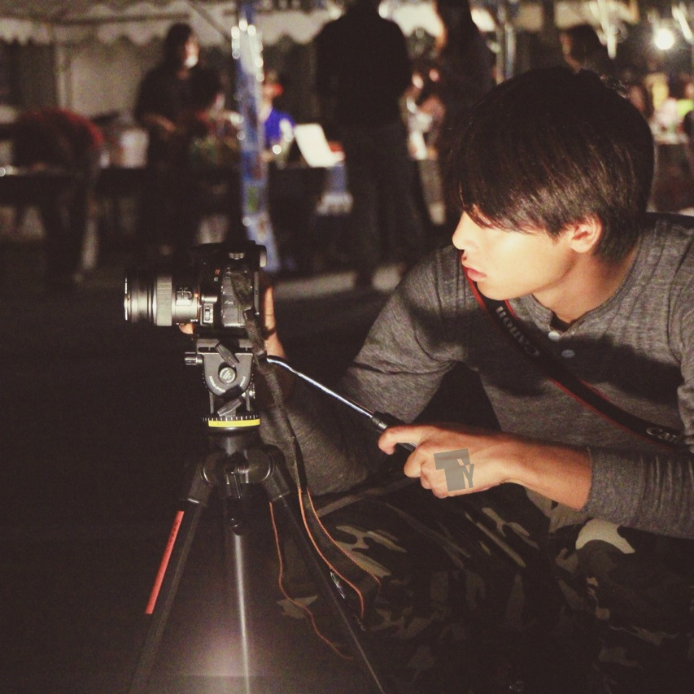

1968 Music Video
deronderonderon1stアルバム
"deronderonderon"
アルバム全曲MV化計画第11段
【撮影・監督】

高宮悠太郎 タカミヤユウタロウ
マルチクリエイター
1994年東京生まれ
フリーでカメラマン、フォトグラファー、ムービークリエイターとして活動中。
団体プロモーションビデオ、イベントオープニング・コンテンツビデオ、ショートムービー集を製作、それらに関連する写真集も出版中。
【出演】
さわいかん
【web】
神長倉佑(deron crew)

© deronderonderon All rights reserved.